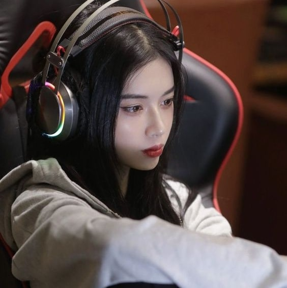
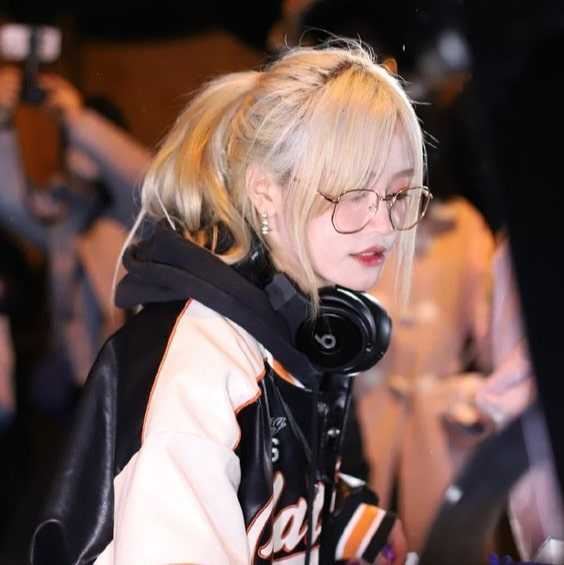
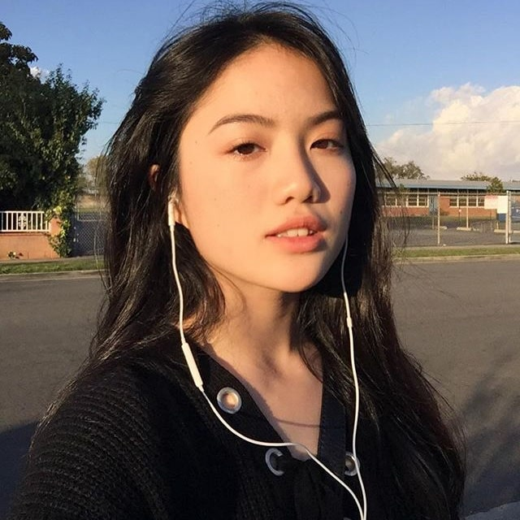

MELINA GIOVANNILLI
Giovanilli was born in Seoul on May 7, 1996.
She was raised Gangseo District, Seoul.
Giovanilli loved puzzles and video games, often playing custom maps for Warcraft III and the MOBA Chaos.
She discovered League of Legends in late 2011, and quickly became adept at the game.
She dropped from High School to pursue a career in esports.
 |
ADELA ANTONETTI
Antonetti was born on March 20, 1998. She spent her early life in New York.
Antonetti always loved sports and video games, but in the end she knew she needed to pick one of the paths.
She stumbled across League of Legends in early 2013, and quickly fell in love with the game.
 |
LUCKY FISK
Fisk was born on October 11, 1997. She was born and spent her early life in Pekin.
Fisk wasn't fond of video games at first, but she changed her mind after her older brother showed her them.
She sheard aboutLeague of Legends from her friend in 2012, and quickly became a pro.
 |